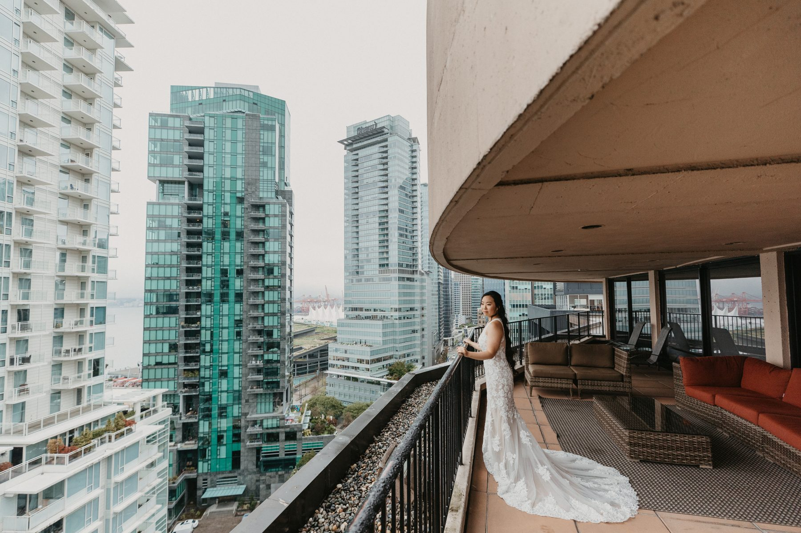
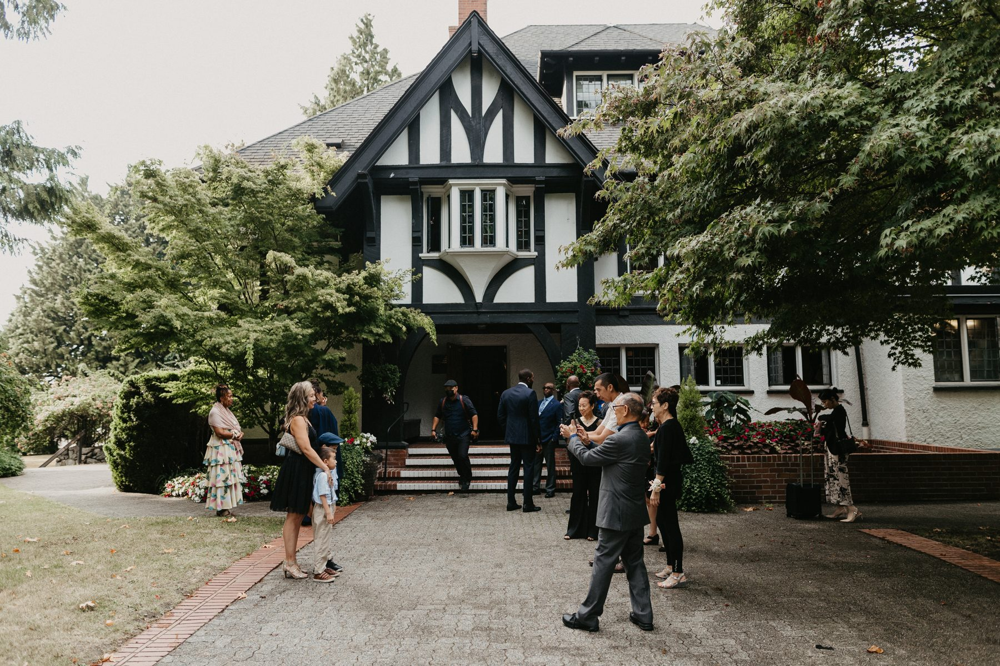
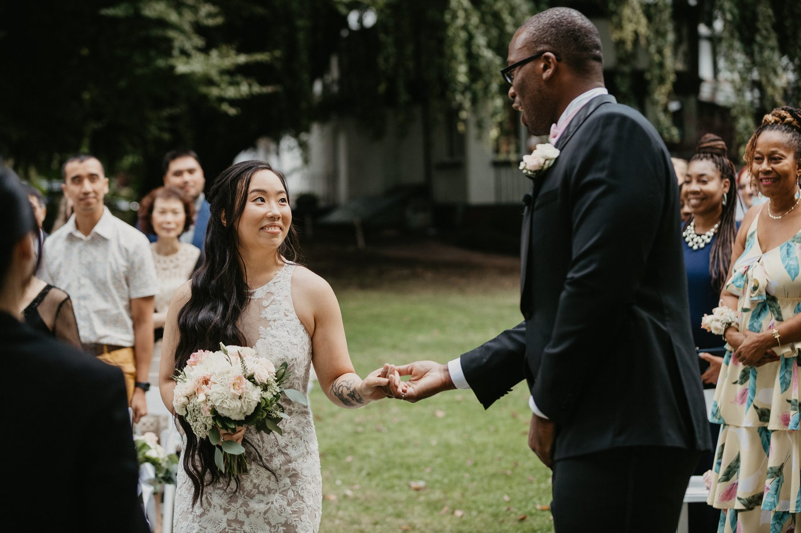
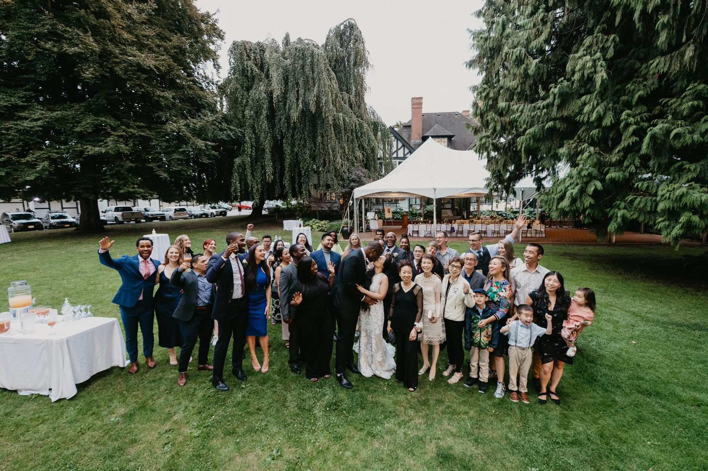
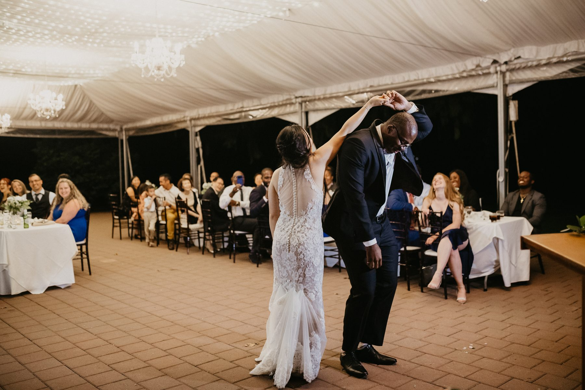

Fiona and Shomari got ready high above downtown, got married on a lawn at the edge of the water, and danced the night away under a tent full of chandeliers.
That is a lot of different places for one day. It is also exactly how I would plan it.
They started downtown. A hotel room with a wall of glass, a balcony wrapped around the corner of the building, and the towers of downtown standing right outside. Morning drizzle meant Shomari walked down to street level with a navy umbrella for a few portraits, which I loved.
Fiona got ready upstairs. Makeup by the window, dress on the hanger, her mom nearby. The balcony turned out to be the best room in the suite.

Here is something worth knowing if you are booking a hotel room for getting ready. Pick the room, not the hotel. Ask for a corner, a high floor, and a balcony. Ask whether the room faces south or west. A room with a view is a free location.
Fiona and Shomari did a first look on the balcony. No audience, no phones, just the two of them. He turned around and she was there.
I am a big believer in this for a day with this many moving parts. You get your private moment early, before a hundred people want something from you. Then you walk into the ceremony as a team, not a pair of nervous strangers. If you are weighing it up, I wrote about the honest tradeoff of a first look.
We left the hotel in a black car. Nothing flashy. A roof, leather seats, a driver who knew the route, and ten quiet minutes for Fiona and Shomari to be together before the day got loud.
I tell couples all the time to build in a gap like this. It costs almost nothing, and it is the only stretch of the day where you are not on show.
The ceremony and reception were at a black and white Tudor style house on the west side waterfront, with a wide lawn running down toward the beach. Willows, old maples, a white tent off to one side, and the North Shore mountains sitting across the water.

That mix, a heritage house for the arrival, a lawn for the ceremony and a tent for the party, is one of the smartest venue formats in the city. Every part of the day gets its own setting. You do not have to stage your whole wedding in one room and hope.

They stood with their backs to the inlet. Cargo ships in the distance, mountains behind them, a layer of cloud that I would not have changed for anything. Fiona read hers with a quiet smile. Shomari wiped his face with the heel of his hand and kept going.
This is the part I will push on couples who think a grey day means a worse day. Soft cloud is the best light there is for an outdoor ceremony. It lights both faces evenly, no squinting, no hard shadows. And the water behind them stays a soft silver blue.
The reception moved into the tent. Chandeliers, long tables, a guitarist for cocktail hour, kids sprinting across the grass in suspenders and bow ties. Speeches ran long and nobody minded.

One note on group photos. Take one big one, early, while everyone is sober and the light is still good. We shot it from above. It took ninety seconds and it will be framed in someone's hallway for twenty years.
Later, the dance floor filled up and stayed full.

Give your morning a view. Take a quiet car ride. Pick a venue that offers three or four different settings. Put a tent on the lawn instead of a ballroom behind a hallway. And do not cancel the water because the sky is grey.
Fiona and Shomari did all of that and it looked like a very good day, because it was.
SimplyWed Studio is a Vancouver wedding and elopement photography studio. Send us your date through the contact page and we will walk through the timeline and the light with you.
← Back to the journal